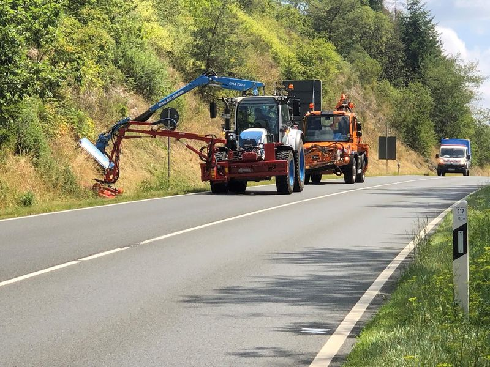

Saison Mai bis Oktober
Mäh- und Gehölzarbeiten in Taunusstein
Unsere Betriebsstätte steht in Taunusstein. Von hier aus pflegen wir Bankette, Böschungen, Rückhaltebecken und Gehölz an den Straßen der Stadt und ihrer Stadtteile, von Mai bis Oktober.
- Betrieb vor Ort
- Kurt-Schumacher-Straße 36, 65232 Taunusstein
- Stadtteile
- Neuhof, Wehen, Hahn, Bleidenstadt, Seitzenhahn und die übrigen Ortsteile
- Saison
- Mähen Mai bis Oktober, stärkerer Gehölzrückschnitt im Winterhalbjahr
- Auftraggeber
- Stadt, Landesbehörden, Unternehmen und private Eigentümer
Taunusstein
Grünpflege vor Ort
In Taunusstein sind wir zu Hause. Im Winter räumen wir hier Straßen und Gehwege, im Sommer stehen dieselben Trägerfahrzeuge mit Mähwerk und Ausleger auf dem Hof. Die Anfahrt zu den Stadtteilen ist kurz, und wer bei uns anruft, spricht mit Leuten, die die Strecken kennen.
Die Stadt liegt im Taunus, viele Straßen verlaufen an Hängen und Waldrändern. Böschungen müssen regelmäßig gemäht werden, damit die Entwässerung funktioniert und Leitpfosten sichtbar bleiben. Wo Äste in den Verkehrsraum wachsen, stellen wir den Lichtraum über der Fahrbahn wieder her.
Leistungen in Taunusstein
Was wir hier mähen und schneiden
- StraßenbegleitgrünBankette, Gräben und Böschungen mit Ausleger und Frontmähwerk
- GehölzrückschnittLichtraum über Fahrbahn und Gehweg wiederherstellen
- RückhaltebeckenBöschungen, Dämme und Zufahrten von Becken
- RadwegeSeitenstreifen frei, Belag zum Schluss sauber
- SonderflächenKreisverkehre, Inseln, Einmündungen und Wälle
- MittelstreifenGras und Gehölz zwischen den Schutzplanken, mit Absaugung
Fragen und Antworten
Häufige Fragen aus Taunusstein
Ihre Frage ist nicht dabei? Rufen Sie uns an, Montag bis Sonntag von 7 bis 20 Uhr.
Wo sitzt Ihr Betrieb in Taunusstein?
Welche Flächen pflegen Sie in Taunusstein?
Übernehmen Sie auch die Dokumentation?
Gibt es feste Pflegeverträge?
Anfrage
Mäharbeiten in Taunusstein anfragen
Stellen Sie Ihre Anfrage in vier Schritten zusammen. Wir melden uns mit einer Einschätzung und einem Angebot.